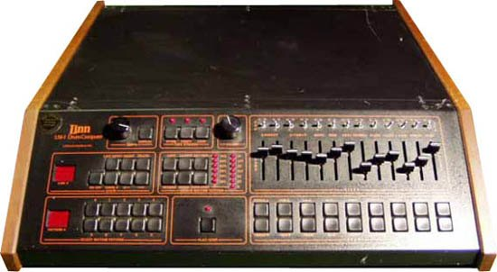
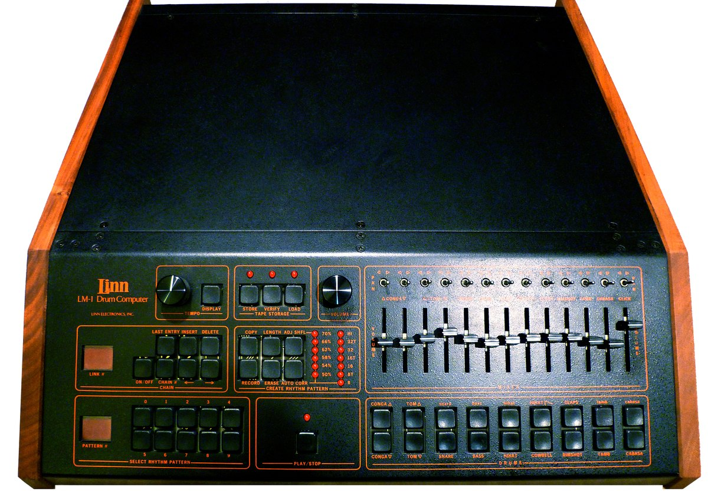

The drum machine you played to program
The Linn LM-1 cost $5,000 and only 525 were made. Its front panel carried 12 hard-plastic pads that served double duty — you struck them to play, and you tapped them to program. The instrument IS the programming surface.
In 1980, a guitarist named Roger Linn built a box that started a war. On one side: the Roland TR-808, which I have already written about as the machine that showed you the grid — 16 parallel rows of buttons, each instrument getting its own row of LEDs walking across the columns. The 808 made rhythm a language you could see, and it is the more famous machine by every measure: fewer than 12,000 units, discontinued in 1983, and then the most-used drum machine in history.
The Linn LM-1 is the other side of the war.

It cost $4,995–$5,500 — more than a small car — and only 525 were ever made. And yet it was the first drum machine a professional studio could pass off as a real drummer. Its sounds were 28 kHz, 8-bit samples of actual acoustic drums: a real kick, a real snare, real hi-hats, recorded and stored as digital data. Earlier drum machines synthesized their percussion from oscillators and noise generators. The LM-1 sampled it, and suddenly the machine could sound like the record you were trying to make. Prince used it on 1999 and Purple Rain. Michael Jackson used it on Thriller. Phil Collins played it. Peter Gabriel scored So with it.
But the sound was only half the story. The interface was the other half, and it is the stranger one.
The pads that do two things
The LM-1's front panel is a row of 12 hard, velocity-sensitive plastic pads — one per drum voice. They sit in a single row above the controls, each labeled with its sound: KICK, SNARE, HIHAT CLOSED, HIHAT OPEN, CABASA, TAMBOURINE, and so on. They feel like small drum pads, because they are: you strike them with your fingers to play a live pattern in real time. A drummer's hands on a drum machine, 1980.
But those same 12 pads are also the programming surface. To write a pattern you do not reach for a grid of step buttons. You select a pad — the KICK pad, say — then press a STEP SELECT button, then tap the KICK pad once for each step in the 16-step cycle where the kick should hit. If you want a kick on 1 and 3, you tap the KICK pad twice. The pads, the ones you just struck to play, now serve as the buttons that place hits on the timeline. They are both things at once. The instrument you play is the surface you program.

This is the exact opposite of the TR-808's philosophy. The 808 separates your hands from the sounds: each instrument row is a line of abstraction, and you press buttons that represent a noise somewhere else. The LM-1 puts your finger directly on the drum voice you mean to write with. Programming becomes a kind of percussion — a physical reach for the sound you want, a tap on the step where it lands. The machine does not ask you to think in parallel rows. It asks you to think in hits.
And then it adds quantization — what Linn called "timing correct" — and swing, or "shuffle." The LM-1 was the first drum machine to offer either. Quantization snapped each hit to the nearest subdivision, erasing the flams and drags of a human hand. Swing shifted alternate sixteenths slightly later, creating the laid-back groove that became the sound of 1980s pop and R&B. Together they let a machine programmed by tapping pads sound like it was played by someone who had been playing for years. They are the reason the LM-1's interface felt like an instrument and not a calculator.
The pad that changed everything
The LM-1 sold so few units that every surviving serial number is tracked by collectors. Linn's next machine was the LinnDrum (1982), which was cheaper and more successful. Then came the Linn 9000 (1984), which added MIDI and a built-in sequencer. But the LM-1's real descendant was not a Linn machine at all. In 1987, the Japanese company Akai approached Roger Linn to design a sampling drum machine. The result was the MPC60 — a grid of velocity-sensitive pads that are the instrument, the programming surface, and the performance controller, all in one. The MPC is not in this museum. But the paradigm it made famous — the pad-as-grid, play-to-program workflow — begins here.
The museum's music-interface collection has the 808 grid and the TB-303 hidden grid and the Movement MCS QWERTY-programmed British oddity. The LM-1 is the third corner of the step-sequencer family: the instrument you program by striking the instrument, the pad that is both trigger and button, the machine that turned programming into percussion and proved that the best way to write a beat might be to tap it out with your own hands.